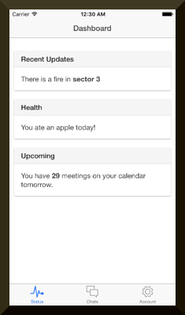
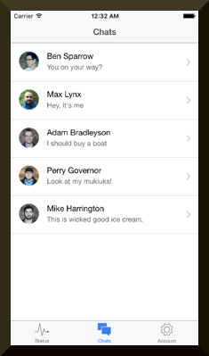
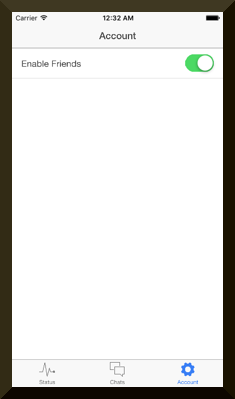
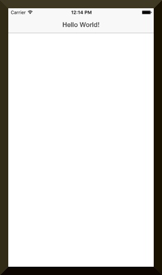
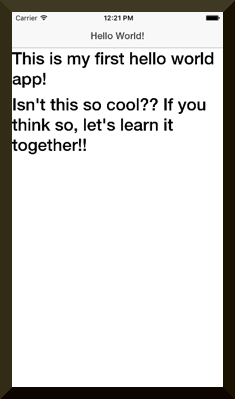

First of all, I am interested in learning Javascript. After some researches, I found that Node.js and Ionic are interesting for me to learn Javascript. So, I decided to learn them by doing a little by little.
In this article, I wrote what I did to create my first “hello world” iOS app built with Ionic, with some additional information I have acquired on the way. This isn’t really a tutorial but it might help some people to have brief pictures of how to create an app with Ionic and how easy it was.
Actually, this is my first attempt to create an Ionic app (, and even writing this type of article, too!). Since Ionic provides various platforms to choose from, I decided to go with an iOS platform at first. The list of the available platforms can be found here.
Ionic provides several ready-made app templates. So, first, I used the template to confirm that the environment is successfully created, and then created my first hello world iOS app without the templates(a blank app). The instructions are mostly taken from the official instruction.
Furthermore, I thought it would be nice to share what I have learned. Any comments, feedback, or even English grammer-checking would help me a lot!
What is Ionic?
What is Ionic? The following is the quote from the official website.
Ionic is a powerful HTML5 SDK that helps you build native-feeling mobile apps using web technologies like HTML, CSS, and Javascript. http://ionicframework.com/docs/overview/
Before I start, I need to install Node.js 4 (not Node.js 5), as noted in the official instruction. Sorry. I have already had it installed on my macbook. So, I will just make sure that I have the version 4.
1 2
$ node -v v4.2.3
Looks good. Let’s move on.
Install Ionic (and Cordova)
Just by following the official instruction, it says to install the necessary packages. Let’s do that. It seems that there are two main packages, cordova and ionic(CLI), that will be installed after executing the following command.
Cordova is an open source project which enables us to create mobile apps with HTML, CSS, and JS (hybrid mobile apps), and is maintained by Apache Software Foundation. So… maybe… ionic is built on top of Cordova?
Moreover, you should not install these packages locally. Do it with the npm’s ‘-g’ option. See the bottom of this page for more detailed warnings and errors I have encountered.
There seems to be some of ready-made app templates provided by default. For this time, I used one that is called tabs and named my app as myFirstAppWithTmpl. This will create a project directory containing a bunch of many files in it.
To create a blank app, just type ionic start <APP_NAME> blank. (replace the with the name for your app.)
$ ionic start myFirstAppWithTmpl tabs Creating Ionic app in folder /Users/kentakikui/Develop/myFirstIonicApp/myFirstAppWithTmpl based on tabs project Downloading: https://github.com/driftyco/ionic-app-base/archive/master.zip [=============================] 100% 0.0s Downloading: https://github.com/driftyco/ionic-starter-tabs/archive/master.zip [=============================] 100% 0.0s Updated the hooks directory to have execute permissions Update Config.xml Initializing cordova project Adding in iOS application by default Added ios platform
Your Ionic project is ready to go! Some quick tips:
* cd into your project: $ cd myFirstAppWithTmpl
* Setup this project to use Sass: ionic setup sass
* Develop in the browser with live reload: ionic serve
* Add a platform (ios or Android): ionic platform add ios [android] Note: iOS development requires OS X currently See the Android Platform Guide for full Android installation instructions: https://cordova.apache.org/docs/en/edge/guide_platforms_android_index.md.html
* Build your app: ionic build <PLATFORM>
* Simulate your app: ionic emulate <PLATFORM>
* Run your app on a device: ionic run <PLATFORM>
* Package an app using Ionic package service: ionic package <MODE> <PLATFORM>
For more help use ionic --help or ionic docs
Visit the Ionic docs: http://ionicframework.com/docs
Create an ionic.io account to send Push Notifications and use the Ionic View app? (Y/n): n +---------------------------------------------------------+ + New Ionic Updates for December 2015 + + The View App just landed. Preview your apps on any device + http://view.ionic.io + + Invite anyone to preview and test your app + ionic share EMAIL + + Generate splash screens and icons with ionic resource + http://ionicframework.com/blog/automating-icons-and-splash-screens/ + +---------------------------------------------------------+
Next. I installed ios-sim to use the iOS simulator to test my app.
I have never built any of iOS apps before, so I don’t have any experience using the simulator. However, the iOS simulator looks really cool, and I think it is great since this, at least, provides me a way to run my apps without an iPhone. (Though, I believe that it is always the best to use a real device.)
Touch build/emulator/myFirstAppWithTmpl.app cd /Users/kentakikui/Develop/myFirstIonicApp/myFirstAppWithTmpl/platforms/ios export PATH="/Applications/Xcode.app/Contents/Developer/Platforms/iPhoneSimulator.platform/Developer/usr/bin:/Applications/Xcode.app/Contents/Developer/usr/bin:/Users/kentakikui/.rbenv/shims:/Users/kentakikui/.rbenv/bin:/opt/local/bin:/opt/local/sbin:/opt/local/bin:/opt/local/sbin:/usr/local/bin:/usr/bin:/bin:/usr/sbin:/sbin:/opt/X11/bin:/Users/kentakikui/Documents/adt-bundle-mac-x86_64-20130219/sdk/platform-tools:/Users/kentakikui/Documents/adt-bundle-mac-x86_64-20130219/sdk/tools:/Applications/Sublime Text 2.app/Contents/SharedSupport/bin" /usr/bin/touch -c /Users/kentakikui/Develop/myFirstIonicApp/myFirstAppWithTmpl/platforms/ios/build/emulator/myFirstAppWithTmpl.app
** BUILD SUCCEEDED **
No target specified for emulator. Deploying to iPhone-6 simulator com.ionicframework.myfirstappwithtmpl991748: 46271 ** RUN SUCCEEDED **
As soon as I saw the RUN SUCCEDDED message, an iOS emulator popped up automatically and showed me a nice sample app like these:   
OK. Now I think I can confirm that my development environment works fine. Let’s make my first hello world app.
Stop the simulator by typing killall "Simulator". You may also do it with command + q. (More reference can be found here)
Creating My First Hello Iconic World App
Build A Blank Project
Let’s make a new app called, myFirstHelloApp. This time I chose an empty app by specifying blank for template.
1 2 3 4 5 6 7 8 9 10
$ cd ..; ionic start myFirstHelloApp blank Creating Ionic app in folder /Users/kentakikui/Develop/myFirstIonicApp/myFirstHelloApp based on blank project Downloading: https://github.com/driftyco/ionic-app-base/archive/master.zip [=============================] 100% 0.0s Downloading: https://github.com/driftyco/ionic-starter-blank/archive/master.zip [=============================] 100% 0.0s Updated the hooks directory to have execute permissions ... ... ...
Set A Platform
Do the same thing as what we did for the first app. (Why not a warning, instead of error? Maybe it because I am using a mac?? Anyway, let’s just keep going for now since the error message seems it is not a big deal.)
1 2 3 4 5 6 7 8
$ cd myFirstHelloApp; ionic platform add ios Updated the hooks directory to have execute permissions Downloading Default Ionic Resources Downloading: https://github.com/driftyco/ionic-default-resources/archive/master.zip [=============================] 100% 0.0s Done adding default Ionic resources Adding icons for platform: ios Error: Platform ios already added.
Edit To Show A Hello World Message
The project directory looks like this:
1 2 3
$ cd myFirstHelloApp; ls $ cd myFirstHelloApp; ls bower.json config.xml gulpfile.js hooks ionic.project package.json platforms plugins scss www
Edit the file, www/index.html, with your favorite editor, and replace the title, ‘Ionic Blank Starter’, with ‘Hello World!’.
Next. Build the app. This step is also the same as what we did for the first app.
1
$ ionic build ios
I see no errors or warnings. Good.
Run The App
1 2 3 4 5 6 7 8 9 10 11 12 13
$ ionic emulate ios Running command: /Users/kentakikui/Develop/myFirstIonicApp/myFirstHelloApp/hooks/after_prepare/010_add_platform_class.js /Users/kentakikui/Develop/myFirstIonicApp/myFirstHelloApp add to body class: platform-ios
... ... ...
** BUILD SUCCEEDED **
No target specified for emulator. Deploying to iPhone-6 simulator com.ionicframework.myfirsthelloapp639529: 47260 ** RUN SUCCEEDED **
Again, as soon as I see the “ RUN SUCCEEDED “ message, the simulator gets executed with my app running on it. 
Coooool! It works!! Now, I will add some more messages in between the tags, like this:
1 2 3 4 5 6 7 8 9 10 11 12 13 14 15
... ... 23 </head> 24 <body ng-app="starter"> 25 26 <ion-pane> 27 <ion-header-bar class="bar-stable"> 28 <h1 class="title">Hello World!</h1> 29 </ion-header-bar> 30 <ion-content> 31 <h2>This is my first hello world app!</h2> 32 <h2>Isn't this so cool?? If you think so, let's learn it together!!</h2> 33 </ion-content> 34 </ion-pane> 35 </body> 36 </html>
And run the following command. This time, I just edited the html file, so I just re-run the app.
1 2 3 4 5 6 7 8 9 10 11 12 13
ionic emulate ios Running command: /Users/kentakikui/Develop/myFirstIonicApp/myFirstHelloApp/hooks/after_prepare/010_add_platform_class.js /Users/kentakikui/Develop/myFirstIonicApp/myFirstHelloApp add to body class: platform-ios
... ... ...
** BUILD SUCCEEDED **
No target specified for emulator. Deploying to iPhone-6 simulator com.ionicframework.myfirsthelloapp639529: 47614 ** RUN SUCCEEDED **
Now I see the messages as well!! Well… it doesn’t look pretty. However, now I know, at least, how to get started to create my future iOS apps with Ionic! This is enough for today!

Do Not Install Ionic And Cordova Locally
(At first, I actually tried to install the cordova and ionic cli packages locally. However, this did not work well. For our references, I post what I did.)
The official instruction uses the -g option to install the packages globally, but I did not follow it since I tend not to install anything globally for the first time.
$ ./node_modules/ionic/bin/ionic start myApp tabs ****************************************************** Dependency warning - for the CLI to run correctly, it is highly suggested to install/upgrade the following:
Please install your Cordova CLI to version >=4.2.0 `npm install -g cordova` Install ios-sim to deploy iOS applications. `npm install -g ios-sim` (may require sudo) Install ios-deploy to deploy iOS applications to devices. `npm install -g ios-deploy` (may require sudo)
****************************************************** Creating Ionic app in folder /Users/kentakikui/Develop/myFirstIonicApp/myApp based on tabs project Downloading: https://github.com/driftyco/ionic-app-base/archive/master.zip [=============================] 100% 0.0s Downloading: https://github.com/driftyco/ionic-starter-tabs/archive/master.zip [=============================] 100% 0.0s Updated the hooks directory to have execute permissions Update Config.xml Initializing cordova project
Unable to add plugins. Perhaps your version of Cordova is too old. Try updating (npm install -g cordova), removing this project folder, and trying again. (CLI v1.7.12)
Your system information:
Cordova CLI: Not installed Gulp version: CLI version 3.9.0 Gulp local: Ionic Version: 1.1.1 Ionic CLI Version: 1.7.12 Ionic App Lib Version: 0.6.5 ios-deploy version: Not installed ios-sim version: Not installed OS: Mac OS X El Capitan Node Version: v4.2.3 Xcode version: Xcode 7.2 Build version 7C68
This didn’t look nice. and I don’t know how to fix. This is what I ended up not following the official instruction.
So, I removed all of them, and started all over again.
We are a group of Udacious People working on Open Source projects together during our Udacity.com Nanodegree courses. We meet on a collaborative basis on Slack. The webmaster is Jake and is email is here. Contact Jake if you would like to join our Slack channel.